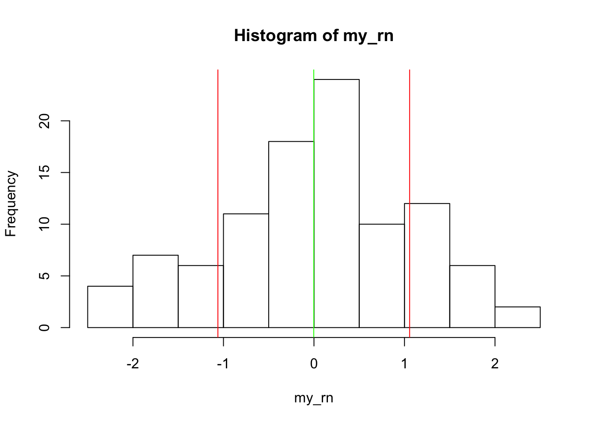

v10 = 1:10
length(v10)rnorm function. What does this function do? Use the rnorm function to sample 100 values from the normal distribution and assign it to the variable my_rn.my_rn = rnorm(100)
length(rnorm)my_rn? Consider using the mean and sd functions. Read the help for these functions as well.mean(my_rn)
sd(my_rn)
# another useful summary
summary(my_rn)my_rn from its current value to its current value + five?# a couple of options
# Add 5 to every value of my_rn
my_rn2 = my_rn + 5
mean(my_rn2)sample() function for some help. Assign the ordering to a variable speakers.speakers = sample(1:25, replace = FALSE)
# what happens if you use replace=TRUE, the default?day1 and day2 containing the first 13 speakers and the last 12 speakers:day1 = speakers[1:13]
day2 = speakers[14:25]rep() function to create a vector of length 10 with just “A” repeating. Do the same, but with “A” and “B” repeating.# This will work
rep("A", 10)
# What is wrong with this one?
rep(c("A", "B"), 10)
# And how is this different?
# How would you know that you need to include
# "each"? Read the help, of course. (or trial and error)
rep(c("A", "B"), each=5)my_rn example, use the < operator to create a vector of TRUE and FALSE so that you isolate values more than 1 standard deviation below the mean. Finally, use the vector of TRUE/FALSE to get the actual values from my_rn that meet these criteria. This is a multi-step problem, so think about the pieces you need and about how to put them together.# first determine the mean
mean(my_rn)
# then, find the sd
sd(my_rn)
# What is one sd below the mean?
mean(my_rn) - sd(my_rn)
# Assign to a variable
below_mean = mean(my_rn) - sd(my_rn)
# Do the comparison
my_rn < below_mean
# We can even capture to a variable
below_mean_index = my_rn < below_mean
# Finally, we can check our answer
my_rn[below_mean_index]my_rn vector (see hist). Add a vertical red line to the plot at 1 sd above and below the mean (see help('abline') and a green line at the mean.hist(my_rn)
abline(v = mean(my_rn) - sd(my_rn), col = 'red')
abline(v = mean(my_rn) + sd(my_rn), col = 'red')
abline(v = mean(my_rn), col = 'green')
If you would like further examples and interactive exercises, try the free DataCamp vector exercises.